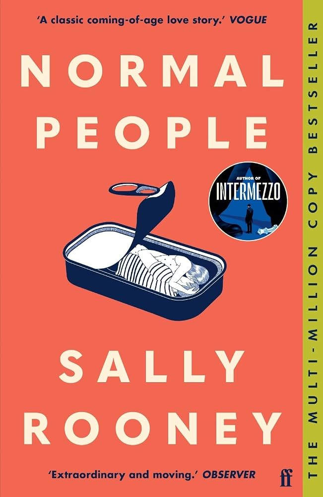
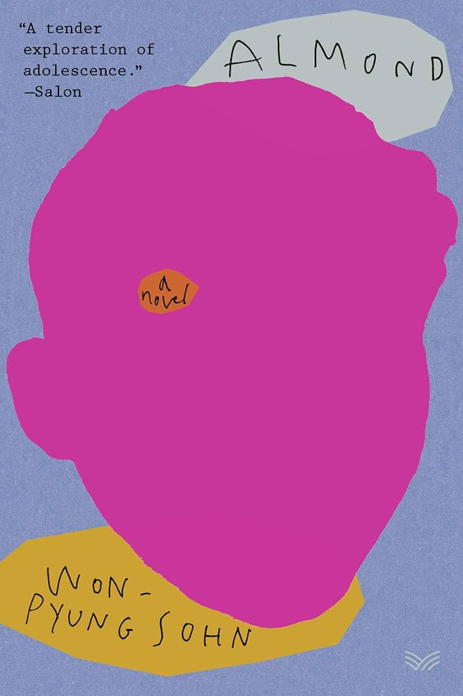
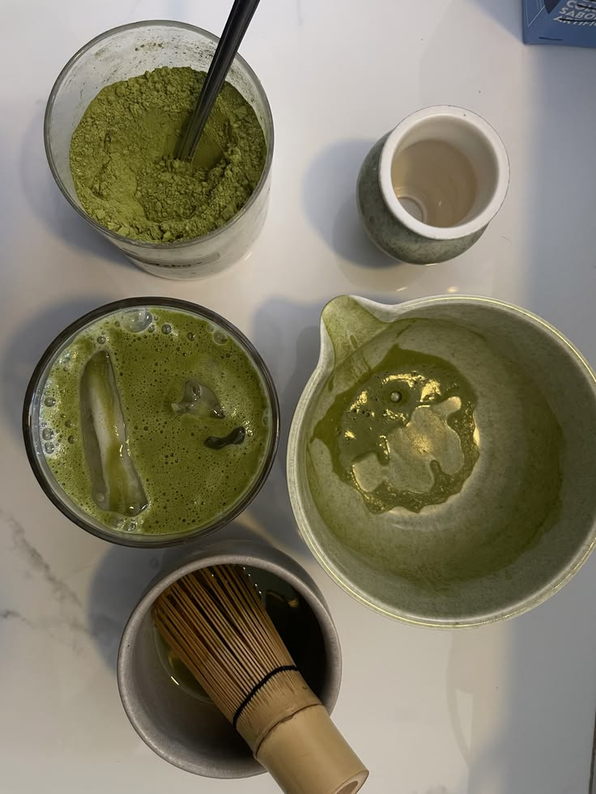
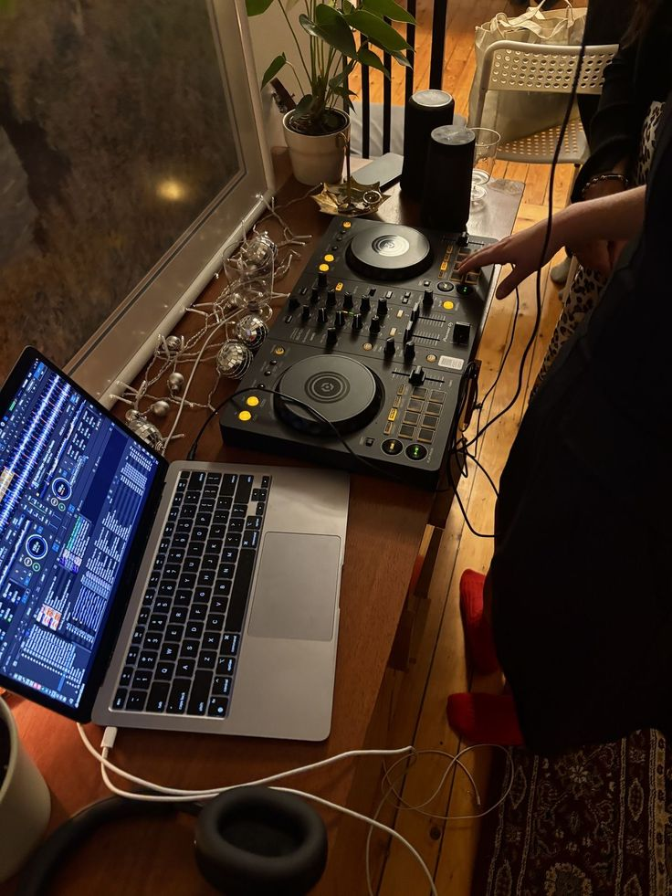

How I got here, so far.
Early curiosity
The first thing I built was an obby on Roblox when I was 13. It was a little obstacle course game, but I remember getting completely absorbed in figuring out how to make the levels work, how to add small bits of programming, and how to make people want to keep playing. It was imperfect and definitely had a few glitches, but it was mine. That project was probably my first taste of building something, testing it, and caring about how another person experienced it.
Finding my way to Berkeley
I’ve always loved the Bay Area, so staying close to home while continuing my studies felt right. Berkeley also puts me close to Silicon Valley and San Francisco—which is hard to complain about when there are beaches, mountains, and so much happening around you. At Berkeley, I’ve been able to explore the mix of business, data, and technology that interests me, while joining clubs like AI Security and archery and finding my own community along the way.
Work that taught me something
I’ve worked across business operations, GRC, responsible AI, data science, and product. Each role has made me more interested in the systems behind good work—and the people those systems are meant to serve.
Ideas I’m carrying around.
Books, essays, and ideas I’m reading lately.

Reading nowNormal People — Sally Rooney
RecommendedAlmond — Sohn Won-pyung Saved for laterMurder in the Age of Enlightenment — Ryūnosuke Akutagawa
Saved for laterMurder in the Age of Enlightenment — Ryūnosuke AkutagawaGet to know my interests.

01I like daily matchas in the morning, and learning the history behind the process—especially how grinding and whisking work.
02When I went to London, I met Fred again and learned a lot about music theory and how it can be applied to business.Where I’m from and where I’d like to go next.
The cities, countries, neighborhoods, and landscapes that matter to me.
A few things that probably belong somewhere.
I like training animals in my free time, including volunteering at pet shelters to help animals adjust to humans.
I built a Roblox game and learned some basic programming from it when I was 13.
I get really into baking. I’ve made pickle cinnamon rolls and other weird flavor combinations. I feel like taste is my strongest sense.
I tend to stop mid-walk to pet any animal I see. I can’t help myself.